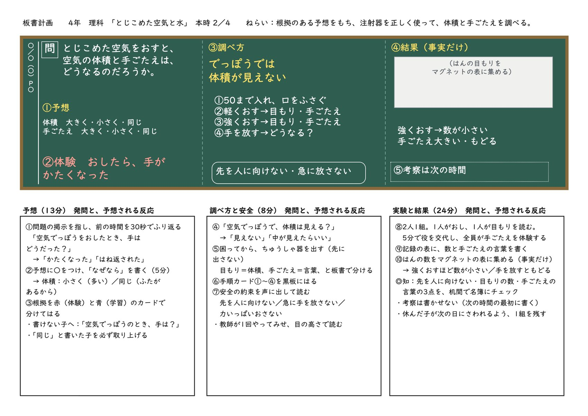
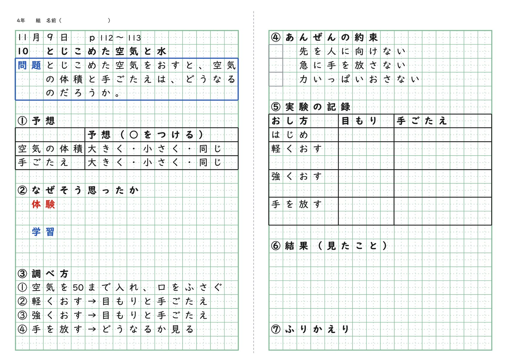
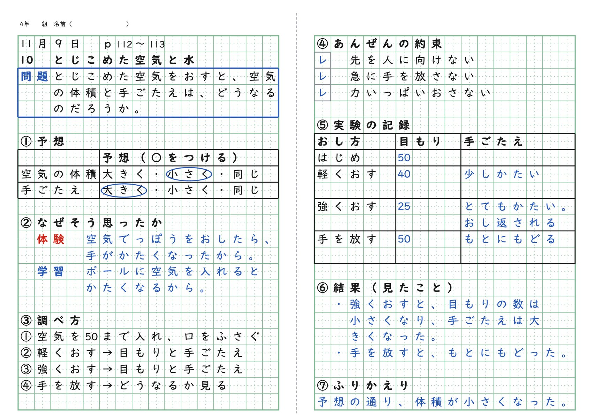

理科 第2時 予想して、空気をおしてたしかめる
11月9日（月）5校時 理科室 p.112〜113 本時 2／4
本時の目標
空気でっぽうの体験をもとに根拠のある予想をもち、注射器を安全に正しく使って、とじこめた空気をおしたときの体積と手ごたえの変わり方を調べて記録する。
問題とじこめた空気をおすと、空気の体積と手ごたえは、どうなるのだろうか。
評価
| 観点 | 記録 | 見るもの |
|---|---|---|
| 知・技 | ◎ | 注射器を安全に正しく扱い、目もりの数と手ごたえの言葉の両方を記録している（行動観察・ノート）。名簿で3点を見ます。先を人に向けていないか、目もりの数を書いたか、手ごたえを言葉で書いたか。 |
展開（45分）
| 時間 | 学習活動 | 発問と、予想される子どもの反応 | 指導上の留意点・評価・掲示 |
|---|---|---|---|
| 0〜3分 | 前の時間をふり返り、問題を確かめる | 「空気でっぽうを強くおしたとき、手はどうだった？」 ・「かたくなった」 ・「おし返された」 ・「玉がポンと飛んだ」 | 問題カードを黒板の左にはる。 学びの足跡の第1時を指して、休んだ子のために30秒で流れを話す。 |
| 3〜13分 | 予想と、そう思うわけを書く | 「空気の体積と手ごたえは、どうなると思う？ そう思ったわけも書こう」 ・「体積は小さくなる。ぎゅっとつまる感じがしたから」 ・「体積は変わらない。ふたがあって空気が出ていかないから」 ・「手ごたえは大きくなる。おすほどかたかったから」 | ノートの表に○をつけ、わけを3分で書く。 ネームプレートで立場を黒板に出す。 わけは、体験を赤、学習を青のカードに分けてはる。 書けない子には「空気でっぽうのとき、手はどうだった？」と体験にもどす。 「変わらない」と書いた子を必ず取り上げる。この子の予想が実験の意味になる。 |
| 13〜21分 | 調べ方を考え、安全の約束を確かめる | 「空気でっぽうで、体積は見える？」 ・「見えない」 ・「中がすけていたらいい」 ・「目もりがあればいい」 「目もりで分かるのは何？ 手ごたえはどうやって記録する？」 ・「目もりは体積」 ・「手ごたえは言葉で書く」 | 注射器は、子どもが困ってから出す。先に見せない。 手順カード①〜④をはる。 安全の約束をみんなで声に出して読む。 教師が1回やってみせ、目の高さで目もりを読む。 |
| 21〜36分 | 注射器で空気をおして、記録する | 「軽くおす、強くおす、手を放す。目もりと手ごたえを記録しよう」 ・「軽くおすと40になった」 ・「強くおすと25。手がおし返される」 ・「放したら50にもどった！」 | 2人1組で、おす人と目もりを読む人に分かれる。5分で交代し、全員が手ごたえを体験する。 先をゴム板にしっかりおしつける。空気がもれると数がそろわない。 ◎知・技：机の間を回りながら、名簿に3点をつける。 |
| 36〜43分 | はんの結果を集める | 「はんの数を表に入れよう。どんなことが見えてくる？」 ・「どのはんも、強くおすと数が小さい」 ・「手を放すと、みんな50にもどった」 | 黒板には事実だけを書く。考察はまだ書かない（次の時間のはじめに書く）。 数が大きくちがうはんは、目の高さで読み直す。 |
| 43〜45分 | ふりかえり | 「予想とくらべて、どうだった？」 ・「予想どおり小さくなった」 ・「変わらないと思ったのに、小さくなった」 | 実験セットを1組、教室の後ろに残す。休んだ子が次の朝に1回おせるようにする。 はんの結果の表は、次の時間までそのまま残す。 |
結果（見たこと）の見通し
強くおすと、目もりの数は小さくなり（50から25）、手ごたえは大きくなった。手を放すと、50にもどった。
つまずきと手立て
| つまずき | 手立て |
|---|---|
| 予想にわけが書けない | 「空気でっぽうをおしたとき、手はどうだった？」と、体験そのものをわけにしてよいと伝える。 |
| 目もりが読めない | 目の高さを目もりに合わせる。はんで1人が読み、もう1人が確かめる。 |
| 手ごたえを書かない | ノートの記録の表に手ごたえの欄を刷ってある。空いている欄を指さす。 |
| 空気がもれて数が変わらない | 先をゴム板にまっすぐおしつける。教師が1回やってみせる。 |
準備物
- 注射器（各班2本と予備。ピストンが動くか前日に1本ずつ確かめる）
- ゴム板（先をふさぐ。各班1枚）
- 配る紙「第2時のノート」
- 掲示：問題カード、安全の約束、調べ方の手順①〜④、根拠カード（赤・青）
- はんの結果を集める表（A3。マグネットか水性ペン）
- ネームプレート
板書計画

ノート


休んだ子へ（おいつきカード）
この時間を休んだ子の机に入れておくカードです。子ども向けのページ（休んだ人へ）と同じ中身です。
おいつきカード
理科 空気をおしてたしかめた11月9日（月）をお休みした人へ
理科 空気をおしてたしかめた11月9日（月）をお休みした人へ
名前（ ）
この時間にしたこと
- 空気の体積と手ごたえがどうなるか、予想を書いた
- ちゅうしゃ器に空気を入れて、軽くおす・強くおす・手を放すをためした
- はんの目もりの数をみんなで集めた
わかったこと
強くおすと、目もりの数は小さくなった（50から25）。手ごたえは大きくなった。手を放すと、50にもどった。
ノートに書くところ（これだけでOK）
- ノートの「⑤実験の記録」の表に、目もりの数を書く（はじめ50、軽くおす40、強くおす25、手を放す50）
- 「⑥結果」に、見たことを1つ書く
先生に言って、教室の後ろのちゅうしゃ器を1回おしてみよう。手ごたえを自分の手でたしかめることが、いちばん大事です。
© School Stock